itea._base¶
Interaction Transformation Base classes
Implementation of two base classes to be inherited and specialized for each regression and classification task.
This sub-module does not export any of the implementations, since it is intended for internal usage.
Sub-module contents:
BaseITEA¶
- class itea._base.BaseITEA(*, gens=100, popsize=100, expolim=(-2, 2), max_terms=5, simplify_method=None, random_state=None, verbose=None, labels=[], tfuncs={'id': <function BaseITEA.<lambda>>}, tfuncs_dx=None, fit_kw=None)[source]¶
Bases:
sklearn.base.BaseEstimatorBase class to be inherited for classification and regression tasks.
This class implements argument checks and generic evolutionary methods (population initialization, selection, mutation, and evolution), along with three virtual methods to be implemented.
Ideally, this class should never be instantiated, only its derivations.
Its derivations will be scikit estimators and can be used in many scikit methods such as grid-search or pipelines.
Every argument is a named argument. The list of arguments includes everything that an
ITExprclass needs to be instantiated.All arguments have a default value. In this configuration, the evolutionary process will search only for polynomials.
Constructor method.
- Parameters
gens (int, default=100) – number of generations of the evolutionary process. The algorithm does not implement an early stop mechanism, so it is guaranteed that the algorithm will perform the exact number of generations.
popsize (int, default=100) – population size, consistent through each generation.
expolim (tuple (int, int), default = (-2, 2)) – tuple containing two integers, specifying the bounds of exponents that can be explored through the evolution.
max_terms (int, default=5) – the max number of IT terms allowed.
simplify_method (string or None, default=None) – String with the name of the simplification method to be used before fitting expressions through the evolutionary process. When set to None, the simplification step is disabled.
random_state (int, None or numpy.random_state, default=None) – int or numpy random state. Use this argument to have reproducible results across different executions. When None, a random state instance will be created and used and can be accessed by
itea.random_state.verbose (int, None or False, default=None) – specify if the algorithm should perform the evolution silently or if it should print information through the process. When verbose is None, False, or 0, the algorithm will not print any information. If verbose is an integer
n, then everyngenerations the algorithm will print the status of the generation. If verbose is set to -1, every generation information will be printed.labels (list of strings, default=[]) – (
ITExprparameter) list containing the labels of the data that will be used in the evolutionary process, and will be used inITExprconstructors.tfuncs (dict, default={'id': lambda x: x}) – (
ITExprparameter) transformations functions to be used when creatingITExpr‘s during the evolutionary process. Should always be a dict where the keys are the names of the transformation functions and the values are unary vectorized functions (for example, numpy functions). For user-defined functions, see numpy.vectorize for more information on how to vectorize your transformation functions. Defaults to a dict with only the identity function.tfuncs_dx (dict, default=None) – (ITExpr_explainer parameter) derivatives of the given transformations functions, following the same scheme: a dictionary where the key is the name of the function (should have the derivatives of every function in tfuncs) and the value is a vectorized function representing its derivative. When set to None, the itea package will use automatic differentiation through jax to create the derivatives.
fit_kw (dict or None, default = None) – dictionary with parameters to pass as configuration arguments to the fit method in the
BaseITExprsubclass. If none is given, then a empty dict will be used.
BaseITExpr¶
- class itea._base.BaseITExpr(*, expr, tfuncs, labels=[], **kwargs)[source]¶
Bases:
sklearn.base.BaseEstimatorThis class describes the structure that an
ITExprshould have, and implements only the methods that have similar behavior for classification and regression.The ITEA implementations for classification and regression will create a population of
ITExprinstances and evolve this population to find a final best solutionitea.bestsol_.The best solution will be a scikit estimator and can be used in many scikit methods. It can also be used to create ICE and PDP plots, which are particularly interesting to complement explanations given by the
ITExpr_explainer.Methods that should be specialized are created as virtual methods.
In practice, this class should never be instantiated.
Constructor method.
- Parameters
expr (list of Tuple[Transformation, Interaction]) –
list of IT terms to create an IT expression.
An IT term is the tuple 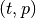, where 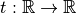 is a unary function called transformation function, and 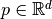 is a vector of size
 , where is the number of
variables of the problem. The tuple contains the information to
create an expression:
, where is the number of
variables of the problem. The tuple contains the information to
create an expression: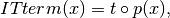
and
 is the interaction of the variables:
is the interaction of the variables: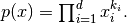
Each IT term is a tuple containing the name of the transformation function and a list of exponents to be used in the interaction function.
The whole expression is evaluated as
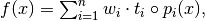
with 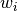 being a coefficient to be adjusted with the
fit()method, and the number of terms.
the number of terms.tfuncs (dict) – should always be a dict where the keys are the names of the transformation functions and the values are unary vectorized functions (for example, numpy functions). For user-defined functions, see numpy.vectorize for more information on how to vectorize your transformation functions.
labels (list of strings, default=[]) – list containing the labels of the variables that will be used. When the list of labels is empty, the variables are named
 .
.
- complexity()[source]¶
Method to calculate the IT expression size as if it was an expression tree, like the conventional representation for symbolic regression.
Some simplifications will be made (the same that we do in
to_str()), so the complexity value corresponds to the string returned by the method.- Returns
complexity – the number of nodes that a symbolic tree would have if the IT expression was converted to it.
- Return type
int
- covariance_matrix(X, y)[source]¶
virtual method to estimate the covariance matrix. Should be overridden by sub-classes.
- fit(X, y)[source]¶
virtual fit method. Should be overridden by sub-classes.
It takes a dictionary as named arguments to allow sub-classes to have specific parameters to the fit method.
- gradient(X, tfuncs_dx, logit=False)[source]¶
Method to evaluate the gradient of the IT expression for all data points in
X. The gradients are useful for theITExpr_explainerclass, which calculates feature importances and generate plots using the gradient information.- Parameters
X (numpy.array of shape (n_samples, n_features)) – points to evaluate the gradients.
tfuncs_dx (dict) – dictionary like
tfuncs, where the key is the name of the function (should have the derivatives of every function in tfuncs) and the value is a vectorized function representing its derivative.logit (boolean, default=False) –
boolean variable indicating if the IT expression is being used as a linear model or as a linear method of a logistic regression predictor. When it is true, then we must consider the derivative of the logistic regression.
let 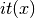 be the IT expression. It is used in a logit model:
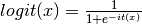
The partial derivative needed to calculate the gradient is:
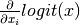
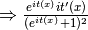
- Returns
nabla – returns a 3-dimensional array. For regression and binary classification,
n_classes=1. Each line of the matrix insidenabla[i]is the gradient evaluated to the corresponding sample in X.To ilustrate:
Gradient of observation i for regression:
gradients(X, tfuncs_dx)[1, i, :]Gradient of observation i according to coefficients to classify the class j in multi-class classification:
gradients(X, tfuncs_dx, logit=True)[j, i, :]
- Return type
numpy.array of shape (n_classes, n_samples, n_features)
- to_str(places=3, term_separator=None)[source]¶
Method to represent the IT expression as a string.
The variable names used are the ones given to
labelsin the constructor.Some simplifications are made to omit trivial operations:
if a variable has zero as an exponent, it is omitted (since it will eval to 1 regardless of the x value);
if the coefficient (or all coefficients, in the multi-class task) is zero, the whole term is omitted.
- Parameters
places (int, default=3) – Number of decimal places to round the coefficients when printing the expression.
term_separator (string or None, default=None) – string that will be used to contatenate each term. Suggestions are
['\n', ' + ', ', ']. If set to None, then the separator used is' + '.